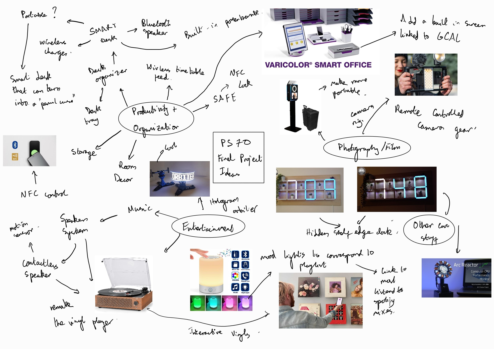

<div class="textcontainer">
<br></br>
<h3>Week 1: Final Project Proposal Brainstorming<h3>

<h4> Idea 1 : Portable Smart Desk</h4>
<p class = "margin"></p>
<p style = "font: 20px Montserrat-Light">
This idea revolves around creating a versatile workspace that can transform based on the user's needs. It would function as a traditional desk organizer to hold stationery, act as a phone/tablet stand, and include a wireless charger. The desk would also have the ability to transform into a case that contains the same features but with a small screen on the outside that displays the user's to-do list or calendar, linked to a Google or iCloud account. This desk would provide enhanced organization and productivity tools, offering easy transitions between different modes of work.
</p>
<p class = "margin"></p>
<h4>Idea 2: Smart Speaker (Motion Controlled/NFC Powered)</h4>
<p class = "margin"></p>
<p style = "font: 20px Montserrat-Light"?>
This smart speaker idea would allow users to control their music and audio systems without the need for direct physical touch, making it more accessible and user-friendly in certain contexts. There are two ways I envision this working: motion control and hand gestures to pause, play, or skip tracks; and NFC tags or cards that, when pressed, can play specific songs or playlists linked to the user's Spotify or Apple Music account. To enhance the aesthetics of the project, the speaker could feature mood lights that change color depending on the playlist or music being played.
</p>
<p class = "margin"></p>
<h4>Idea 3: Hidden Shelf Edge</h4>
<p class = "margin"></p>
<p style = "font: 20px Montserrat-Light"?>
This concept combines room décor with functionality. The shelf would provide storage space while featuring panels that change color to correspond to certain times, adding a dynamic and visually appealing element to the room. The hidden tech components would integrate with the shelf without compromising its aesthetic, making it a sleek, functional piece of decor.
</p>
</div>